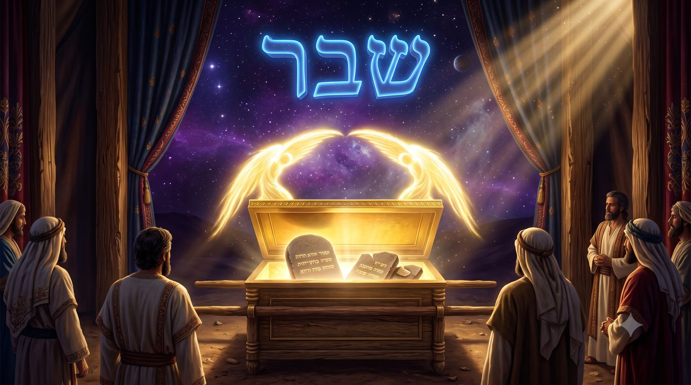
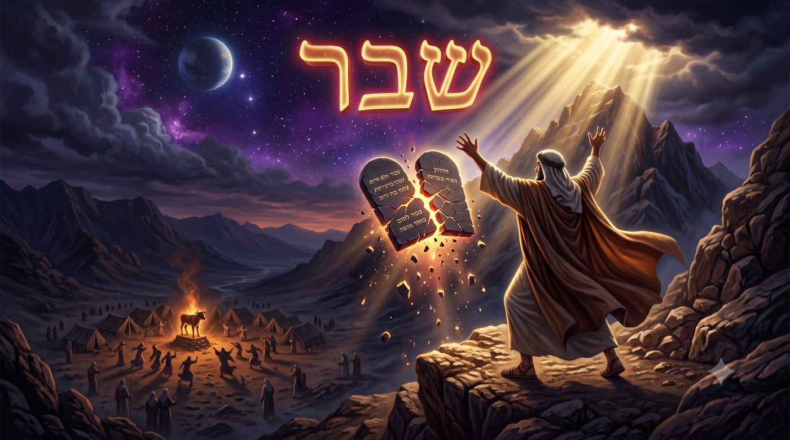
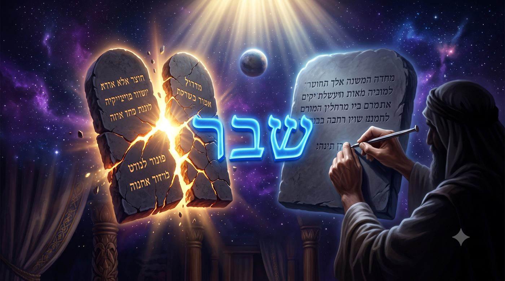

Le fragment sacré
Pourquoi les débris des premières Tables reposent-ils, à jamais, dans l'arche, aux côtés des Tables entières ?
Le 17 Tammouz ouvre les Trois Semaines par une liste de ruptures. La Mishna (Taanit 4:6) compte cinq malheurs tombés ce jour précis : les Tables furent brisées, le sacrifice perpétuel cessa, un rouleau de la Torah fut brûlé par un idolâtre nommé Apostomos, une idole fut dressée dans le Beit HaMikdach, et les remparts de Yeroushalayim furent finalement percés. De ces cinq deuils, un seul remonte au désert, bien avant tout Beit HaMikdach et toute muraille. Moché, redescendu du Sinaï, découvre le veau d'or, et « sa colère s'enflamma, il jeta les Tables de ses mains et les brisa au pied de la montagne » (Chemot 32:19).
Ce geste devrait rester le pire jour de notre histoire. Le don le plus précieux jamais reçu, la parole de D.ieu gravée dans la pierre, réduit en éclats par la main même de celui qui devait la transmettre. Quarante jours plus tôt à peine, ce même peuple avait tremblé au pied du Sinaï en entendant la voix divine ; le voici, à peine Moché reparti, dansant devant une idole de métal fondu. Un détail, pourtant, brouille le tableau. En dressant l'autel du veau d'or, Aharon avait proclamé : « ma'har 'hag laHachem », « demain sera fête pour l'Éternel » (Chemot 32:5). Rachi précise pourquoi demain et non aujourd'hui : Aharon espérait que Moché redescendrait avant que le peuple ne se prosterne. Or Moché devait précisément revenir ce jour-là, le 17 Tammouz. Le premier mot prononcé sur ce jour, avant même le veau d'or, fut donc celui d'une fête.
Et pourtant la tradition ne se contente pas de pleurer ces tables brisées : elle le range, elle le conserve, elle le vénère presque. Un enseignement du Talmud (Bava Batra 14b) rapporte un détail qu'on croirait anodin, et qui bouleverse tout : « les Tables et les débris des Tables reposent ensemble dans l'arche ».
Reposent ensemble : le texte insiste, les débris n'ont pas été jetés, oubliés ou enterrés loin du camp, mais recueillis avec autant de soin que les Tables intactes, pour partager le même coffre, le même lieu que le plus saint des lieux, sous les ailes des kerouvim, au cœur du Saint des Saints. Pourquoi D.ieu garderait-Il un débris ? Une fois le tout perdu, que peut bien valoir encore un fragment ?
C'est cette question que porte, en creux, toute la période de Bein HaMetsarim, les Trois Semaines qui séparent le 17 Tammouz de Tisha BeAv. Un temps de deuil, incontestablement. Mais peut-être pas seulement un temps de perte : peut-être le temps où Israël apprend à vivre avec ses fragments, et découvre qu'un shever, un débris, peut demeurer saint.
Avec l'aide du Ciel et de nos maîtres, nous verrons pourquoi D.ieu Lui-même approuve le geste de Moché, pourquoi les premières Tables brisées gardent une lumière que les secondes, entières, n'ont plus, et comment tout notre temps d'exil se love, comme le shever dans l'arche, au cœur du lieu le plus saint, en attendant le jour où il sera recousu.
• Un shever dans l'arche : ce que garde le Saint des Saints
• Briser sans trahir : un shever qui fut un acte juste
• Le shever qui garde une lumière perdue
• Bein HaMetsarim : vivre au temps du shever
• Recoudre le shever : la délivrance
Rachi, commentant l'ordre donné à Moché de fabriquer l'arche (Devarim 10:1-2), ne laisse rien passer. Le verset dit seulement de placer les Tables dans le coffre, sans mentionner les fragments. Et pourtant Rachi précise, en s'appuyant sur le Talmud, que « les Tables et les débris des Tables sont déposés dans l'arche » : les morceaux furent bel et bien ramassés, portés, conservés, au même rang que les secondes Tables, celles que Moché tailla de ses mains et qui, elles, arrivèrent intactes.

Ce n'est pas un détail d'archivage. L'arche est le lieu le plus saint qui ait jamais existé sur terre, celui devant lequel le grand-prêtre lui-même ne pénètre qu'une fois l'an, en tremblant. Ce lieu ne contient pas que la réussite : il contient, à parts égales, le don reçu et le don brisé. Les kerouvim d'or déploient leurs ailes aussi bien sur l'un que sur l'autre, sans distinction de rang.
La loi juive connaît un principe qui va, étrangement, dans le même sens. Un vase de terre cuite, tant qu'il est entier, peut recevoir l'impureté rituelle et la transmettre à son contenu. Une fois brisé, il en devient totalement incapable, et nos maîtres résument ce renversement dans une formule restée célèbre : « sheviratan zo hi taharatan », « leur bris est leur purification ». Le fragment n'est donc pas toujours une chute. Il arrive qu'il ouvre, au contraire, un état que l'objet entier ne pouvait pas atteindre.
On pourrait dire la même chose d'une vie. Certaines personnes ne deviennent réellement elles-mêmes qu'après une rupture qu'elles auraient voulu éviter à tout prix : un métier abandonné, une certitude perdue, un rêve qui ne se réalisera pas... Le vase intact continuait de fonctionner, mais fermé sur lui-même ; le vase brisé, lui, s'est enfin ouvert à ce qu'il ne pouvait pas recevoir avant.
Ce qui vaut pour un vase vaut, à plus forte raison, pour ce qu'il y a de plus sacré. Un sefer Torah devenu impropre au service, trop usé ou trop déchiré, n'est pas jeté à la poubelle : on l'enterre avec les honneurs dus à un juste, dans une gueniza. Le shever d'un objet consacré ne perd pas sa sainteté, il en change simplement la forme.
Ce qui fut un jour saint ne cesse jamais tout à fait de l'être, même réduit en éclats.
Le Talmud pousse le paradoxe plus loin encore. Dans un passage célèbre (Chabbat 87a), Rech Lakich enseigne que D.ieu approuva Lui-même le geste de Moché : « yishar ko'hakha she-shibarta », « que ta force soit affermie, pour avoir brisé ». C'est, littéralement, un compliment pour un acte de destruction.

Comment comprendre cela ? Moché avait raisonné, rapporte le Midrach, par un argument a fortiori. Si l'agneau pascal, une simple offrande, est interdit à quiconque n'est pas circoncis, à plus forte raison la Torah entière devait-elle être retirée à un peuple qui venait de se prosterner devant un veau d'or. Mieux valait un peuple sans Tables qu'un peuple foulant aux pieds l'alliance qu'il venait à peine de recevoir.
Il y a là une vérité que la vie impose souvent, et que l'on refuse d'entendre. Certaines ruptures ne sont pas des échecs : elles sont des actes de lucidité, parfois même d'amour. Prolonger un projet déjà mort à l'intérieur, maintenir une façade d'entier quand tout, en réalité, s'est disloqué, relève moins de la fidélité que d'un mensonge qui dure. Une association qu'on dissout à temps, une parole qu'on choisit de ne pas prononcer pour ne pas trahir davantage : voilà, à notre échelle, le même geste que celui de Moché au pied du Sinaï.
Moché n'a donc pas brisé les Tables par une colère aveugle échappant à tout contrôle. Il les a brisées pour sauver, dans l'instant même, ce qui pouvait encore l'être, quitte à porter seul, devant tout un peuple, le poids visible de la rupture.
Briser n'est pas toujours trahir une alliance ; c'est parfois le seul geste qui la sauve encore.
Un dernier détail, souvent négligé, change encore le sens de cette histoire. Les premières Tables, celles que Moché brisa, n'étaient pas un ouvrage humain. Le verset précise qu'elles étaient « l'œuvre de D.ieu », et que « l'écriture était l'écriture de D.ieu, gravée sur les Tables » (Chemot 32:16). Pour les secondes Tables, D.ieu demande au contraire à Moché de les tailler lui-même : « taille pour toi deux Tables de pierre comme les premières » (Chemot 34:1). L'écriture reste divine ; la pierre, elle, devient désormais l'ouvrage d'une main d'homme.

Nos maîtres en tirent un enseignement d'une grande profondeur. Les premières Tables portaient une lumière si absolue, si peu mêlée à l'effort humain, qu'elle ne pouvait tenir dans un monde encore fissuré par la faute du veau d'or. On pense parfois à cette autre lumière, celle du premier jour de la création, si intense que D.ieu dut la mettre à part pour les justes du monde futur ('Haguiga 12a) : certaines lumières sont trop hautes pour un monde inachevé, et doivent attendre, cachées, leur heure. Les premières Tables se sont brisées, en un sens, parce qu'elles étaient trop entières pour un monde qui ne l'était plus. Mais cette lumière-là, une fois entrée dans les débris, ne s'est jamais éteinte. Elle repose encore, aujourd'hui, dans l'arche.
La tradition mystique donne à ce principe un nom et en fait la clé de toute la création. Le Ari Z"L enseigne (Etz Haim, Heikhal HaNekoudim) que les vases destinés, dès l'origine, à contenir la lumière divine n'ont pas pu porter une clarté trop intense pour eux : ils se sont brisés, et leurs éclats sont devenus des enveloppes, des kelipot, retenant prisonnières en leur sein des étincelles de sainteté, les nitzotzot. Ce bris-là s'inscrit lui aussi dans le plan divin : il rend possible un monde voilé, où le bien reste caché dans l'écorce, et où l'homme est chargé, par chacun de ses actes, de trier et de faire remonter la lumière enfermée dans l'éclat. Le shever des premières Tables suit, à l'échelle d'une pierre, la même loi que les vases du commencement : il devient la cachette d'une lumière qui attend la main capable de l'en faire sortir.
Le roi David en fait l'expérience la plus intime qui soit. Après sa faute, il n'implore pas seulement le pardon : il redéfinit l'offrande elle-même. « Les sacrifices de D.ieu, c'est un esprit brisé ; un cœur brisé et broyé, ô D.ieu, Tu ne le méprises pas » (Tehilim 51:19). Rien, dans ce verset, n'est plus entier qu'un cœur brisé au bon endroit, pour la bonne raison.
Chacun porte, quelque part, ses propres premières Tables : un idéal reçu avant l'épreuve, une image de soi plus haute que ce que la vie a ensuite permis de tenir. Ces Tables-là aussi se sont souvent brisées, devant un veau d'or ou un autre. Mais rien n'oblige à les jeter en dehors de notre sanctuaire intérieur. Elles peuvent, elles aussi, reposer dans l'arche, à côté de ce que nous sommes devenus, et continuer d'éclairer de l'intérieur.
Un shever peut garder la trace d'une lumière que le monde ne pouvait pas encore recevoir.
Le nom même de cette période naît d'un cri. « Ei'ha », « Comment ? », la complainte sur la destruction de Yeroushalayim, dit : « tous ses poursuivants l'ont rattrapée entre les détroits », bein ha-metsarim (Eikha 1:3). De ce verset, la tradition a tiré le nom des Trois Semaines qui séparent le 17 Tammouz de Tisha BeAv : le temps de l'étroit, du resserré, du souffle qu'on retient.
Les usages de ces trois semaines traduisent, dans le concret d'une vie, cette étroitesse (voir en détail, les halakhot relatives précisées ici succinctement). On n'organise pas de mariage, on ne coupe pas ses cheveux, on écoute moins de musique. Puis, dans les Neuf Jours qui précèdent le jeûne, l'étroitesse se resserre encore : on renonce à la viande et au vin, on renonce à se laver pour le seul plaisir, comme si le corps devait, lui aussi, ressentir un peu de ce que porte le nom de la période. Ces gestes enseignent au corps, par la privation et non par des mots, ce que le cœur doit apprendre à comprendre par lui-même.
Sans Beit HaMikdach, sans arche visible, sans Tables à contempler, Israël vit depuis deux mille ans dans l'exil comme dans un shever prolongé, le débris d'un monde plus entier qui fut, et qui reviendra. On pourrait n'y voir qu'une plaie. Mais l'enseignement des Tables dit autre chose : ce shever-là aussi, D.ieu le porte avec nous, quelque part, dans une arche invisible.
Vivre Bein HaMetsarim, ce n'est donc pas seulement compter les jours qui nous séparent du deuil de Tisha BeAv. C'est apprendre, comme Israël au pied du Sinaï, à ramasser les morceaux sans les jeter, à continuer de servir avec un cœur qui sait qu'il n'est pas encore entier, et à faire de cette étroitesse elle-même le lieu d'où renaîtra, un jour, le plus large des souffles.
L'exil ressemble moins à la simple absence qu'au shever que D.ieu, comme l'arche, continue de porter avec nous.
Ei'ha elle-même, en son cœur le plus sombre, laisse échapper un mot qui la trahit. Décrivant le jour de la destruction, elle écrit que D.ieu « a proclamé contre moi une assemblée [mo'ed] pour briser mes jeunes gens » (Eikha 1:15). Mo'ed : partout ailleurs dans la Torah, ce mot désigne une fête, un rendez-vous joyeux. Nos maîtres y voient un indice glissé au cœur même du deuil, le jour de la pire rupture portant déjà, dans son nom, la promesse qu'il deviendra un jour de fête.
Le prophète Ze'haria rend cette promesse explicite. Il annonce qu'un jour, « le jeûne du quatrième mois », celui de Tammouz, « sera pour la maison de Yehouda joie et allégresse, et des fêtes heureuses » (Ze'haria 8:19). Le jour même où les Tables furent brisées deviendra un jour de fête. Ce renversement n'est pas propre au 17 Tammouz : la tradition l'annonce pour les quatre jeûnes du calendrier juif, comme si le deuil, porté jusqu'au bout, ne pouvait faire autrement que de se retourner en sa propre joie.
Le calendrier lui-même semble avoir gardé la mémoire de la fête promise par Aharon. Un enseignement rapporté au nom de Rabbi Lévi (Yalkout Chimoni) raconte que D.ieu avait prévu, pour chaque mois d'été, une fête : après Pessa'h en Nissan et Chavouot en Sivan devait venir une fête en Tammouz, puis en Av, puis en Eloul. La faute du veau d'or les fit toutes reculer jusqu'à Tichri. Roch Hachana porte depuis la fête qui devait naître en Tammouz ; Yom Kippour, celle qui devait naître en Av. Même le chiffre du jour garde la trace de cette attente : 17, en guematria, est la valeur du mot tov, « bon », le premier mot que D.ieu prononce sur une lumière (Bereshit 1:4). Le jour le plus sombre de l'été porte, lettre pour lettre, le nombre du bien.
Le bris n'est pas simplement effacé par cette promesse, comme s'il n'avait jamais eu lieu. Porté assez longtemps avec fidélité, il finit par se révéler pour ce qu'il était depuis le premier jour, une lumière trop grande, mise à l'écart en attendant un monde assez réparé pour la recevoir tout entière. D'ici là, chaque effort pour ne pas jeter ce qui est brisé, chez soi comme chez l'autre, chaque geste pour continuer de servir avec un cœur qui n'est pas encore guéri, est déjà un fragment de cette délivrance-là, déposé, comme les Tables, au lieu le plus saint que nous ayons : la fidélité qui continue malgré tout.
| וְהָפַכְתִּי אֶבְלָם לְשָׂשׂוֹן וְנִחַמְתִּים וְשִׂמַּחְתִּים מִיגוֹנָם | Je changerai leur deuil en joie, Je les consolerai et les réjouirai de leur chagrin (Yirmiyahou 31:12) |
De nous accorder la force de ne pas jeter ce qui est brisé, ni chez nous ni chez notre prochain, et de continuer à servir avec un cœur qui sait qu'il n'est pas encore entier. Et puissions-nous voir bientôt le jour où Tammouz et Av eux-mêmes seront comptés parmi les fêtes, et où toutes les Tables brisées du monde seront enfin recousues.
| Torah | Talmud |
| Chemot 32:5, « machar 'hag laHachem », la fête proclamée par Aharon ; 32:16.19, la fabrication et le bris des premières Tables ; 34:1, Moché taille les secondes Tables. Devarim 10:1-2, l'ordre de fabriquer l'arche. Bereshit 1:4, « ki tov », le premier bien nommé sur la lumière. | Bava Batra 14b, les Tables et leurs débris déposés ensemble dans l'arche ; Chabbat 87a, « yishar ko'hakha she-shibarta », l'approbation du bris ; 'Haguiga 12a, la lumière du premier jour mise à part pour le monde futur ; Mishna Taanit 4:6, les cinq malheurs du 17 Tammouz. |
| Nevi'im/Ketouvim | Rishonim |
| Ei'ha 1:3, bein ha-metsarim ; 1:15, le mo'ed du jour de la destruction. Ze'haria 8:19, le jeûne du quatrième mois changé en joie. Tehilim 51:19, le cœur brisé que D.ieu ne méprise pas. Yirmiyahou 31:12, le deuil changé en joie. | Rachi, Chemot 32:5, pourquoi Aharon dit « demain » et non « aujourd'hui » ; Rachi, Devarim 10:2, les Tables et les débris déposés ensemble dans l'arche ; Yalkout Chimoni (Rabbi Lévi), Roch Hachana et Yom Kippour comme fêtes reportées de Tammouz et Av. |
| Mystique | Hassidout |
| Ari Z"L, Etz Haim (Heikhal HaNekoudim), la chevirat hakelim : les vases brisés, les kelipot et les nitzotzot ; la lumière supérieure des premières Tables, trop absolue pour un monde encore marqué par la faute, demeure scellée dans les débris jusqu'à la délivrance. | Sfat Emet, sur Bein HaMetsarim, la lumière cachée à l'intérieur du temps resserré. |